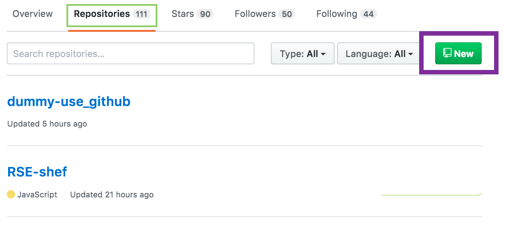
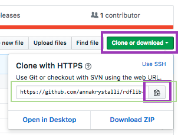
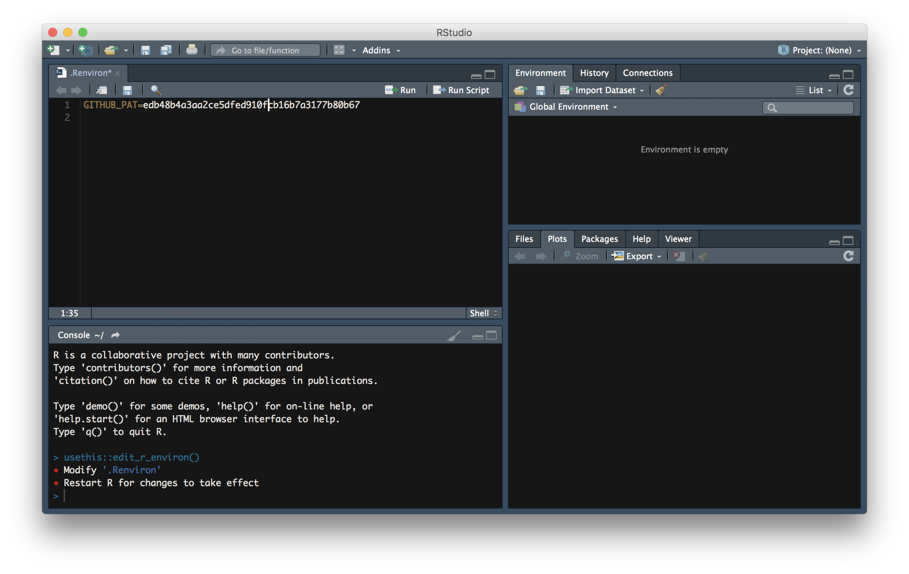
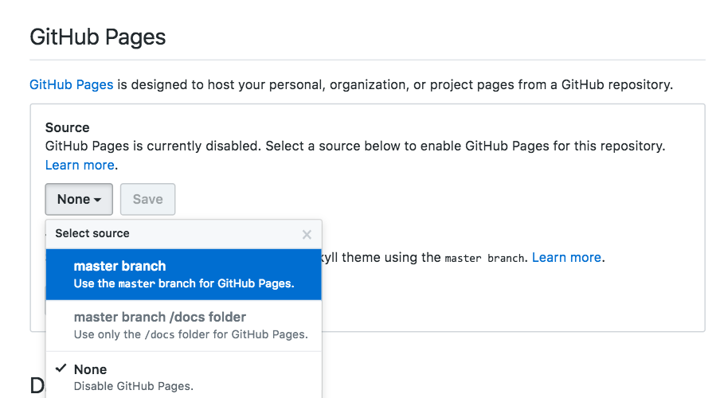
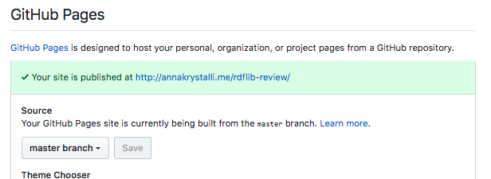

Publish pkgreview on GitHub
Anna Krystalli
2021-07-13
Source:vignettes/publish-review-on-github.Rmd
publish-review-on-github.Rmd1. Create GitHub repo and add it as a remote to your review project
Currently we’ve not integrated the creation of an remote GitHub repo but we’re exploring this functionality also. In the mean time, you can create a repo to publish your review in two ways:
Manually through GitHub
Head over to to your repositories tab on Github.
- Click on New to create a blank repository.
- Follow naming convention
"{pkgname}-review". - Make sure you don’t automatically create any files on GitHub. These will cause merge conflicts when you try to push to the remote for the first time.

- Follow naming convention
Click on Clone or download and copy the link displayed

Open a terminal (in Rstudio go to Tools > Terminal > New Terminal). In the terminal, ensure you are in the review project.
-
Add your github repo as a remote by running the following code in the terminal, substituting in the link you copied from GitHub.
git remote add origin <the-link-you-copied-from-github> git push -u origin masterFor example, in my case I add my repo to as a remote like so:
git remote add origin https://github.com/annakrystalli/rdflib-review.git git push -u origin masterFollow any authentication steps required
Programmatically using usethis::use_github()
To use usethis::use_github, you’ll need to supply a github personal access token (PAT) token. The easiest way to set it up for all your r workflows is to store you PAT in a GITHUB_PAT system variable in your .Renviron dotfile. To do this:
Generate PAT: use
usethis::browse_github_patto launch page to generate a PAT on GitHub.Add PAT to your
.Renvirondot file: Useusethis::edit_r_environ()to open your user level.Renviron, paste the copied PAT token from github and save it like so:

-
Create Github repo & add as remote: Now, while in your review project in Rstudio, run:
usethis::use_github(protocol = "https")to create a github repository for your review and add it as a remote for your review project. The naming of the github repository is handled automatically.
Warning! Because of ongoing big changes in dependency git2r, you may encounter authentication problems with usethis::use_github(). Refer to this discussion thread for further details.
2. Commit the review files and push them to github
In the
gitpanel in Rstudio, select the files you want to share on github. You can chose to only shareindex.nb.html, the rendered report or include theindex.Rmd. Also selectREADME.mdso your repository has an appropriate README from which your review can be accessed.Commit the files adding an appropriate commit message
Push your changes to GitHub
3. Enable GitHub Pages
In your review GitHub repository click on Settings
-
Scroll down to the GitHub Pages section and change Source location to master branch

-
Github Pages is now enabled and your report review will be published at the link displayed:
